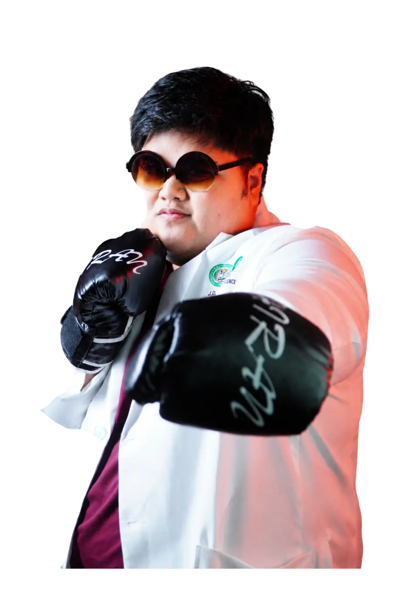

START
Centro Escolar University
My academic journey began at CEU. I later realized that I needed a different environment in which to grow.


College of Medicine
MD 1-1 • PRELIMS
Stay curious. Stay humble. Keep learning.
A record of the science, challenge, and steady progress behind my first steps in medicine.
Enter the portfolio
01 About Me
Hi, I am John Derrick DC. Esguerra, RMT, a 26-year-old medical student from Nueva Ecija.
This portfolio is a modest record of my time in medical school. I created it not to present grand achievements, but to document an honest journey through the science of healthcare and the continuing work of serving others well.
My approach to medicine is simple: stay curious, stay humble, and keep learning. I hope these pages will always remind me where I started and show me how far I have come.
02 Education & Credentials
My academic journey began at CEU. I later realized that I needed a different environment in which to grow.
I transferred and completed my degree in December 2024. The decision taught me that changing direction is not the same as giving up.
I earned my professional credential in August 2025, adding clinical discipline and laboratory responsibility to my foundation.
I completed the training and received my certificate in December 2025.
As a first-year medical student, I am building on my laboratory background while learning to see the patient beyond every result.
03 Biochemistry Prelims
Biochemistry in medical school initially felt like an overwhelming exercise in memorizing amino-acid R groups, molecular structures, enzyme kinetics, and regulation. As the lessons progressed, its real value became clearer.
The pressure
Biochemistry is not simply a basic-science subject to pass. It is the foundational language of human health, disease, and therapeutics. The structures and reactions that once looked disconnected began to reveal how the body works as one system.
The muddiest point
Enzymology became my greatest challenge. There was a point when I nearly gave up and told myself, “Bawi na lang sa midterms.” The kinetics and regulation felt difficult to organize, and the subject tested both my patience and confidence.
The breakthrough
With Doc A’s guidance, I found the clarity and support I needed to keep going. I passed both the prelim long examination and the prelim examination. The experience showed me that I can handle difficult material when I pair determination with the right support and mindset.
“Every complex pathway is part of the chemical logic that allows life to exist.”
04 Gallery
Select an image to view it in full.
05 Reflection
This is only the beginning of my Biochemistry journey. I want this portfolio to remain a reminder of my starting point, the challenges I overcame, and the distance I am still willing to travel.
06 Contact
For academic communication and portfolio inquiries, you may reach me through the details below.